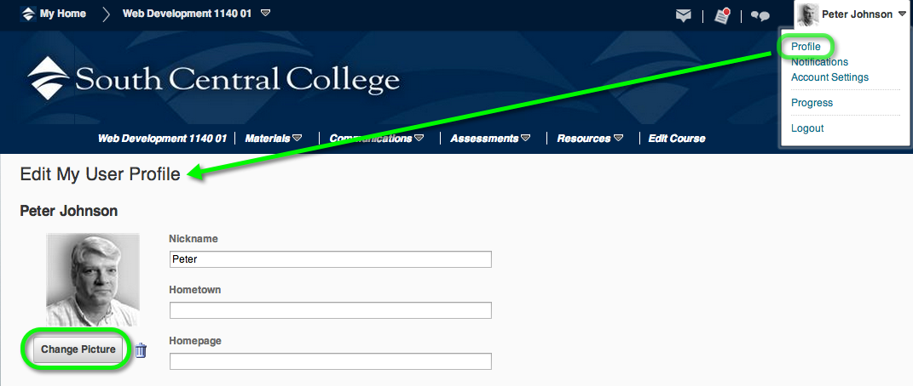
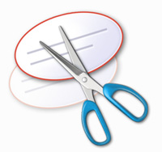
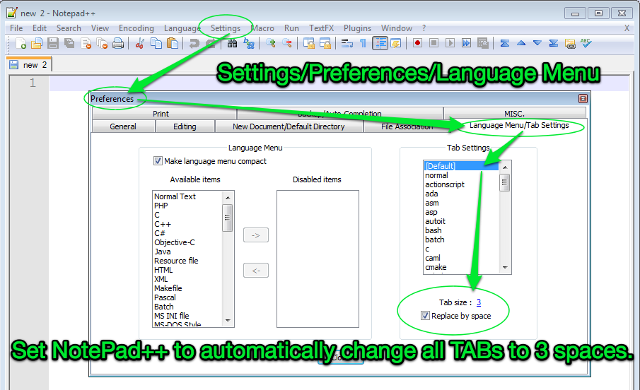
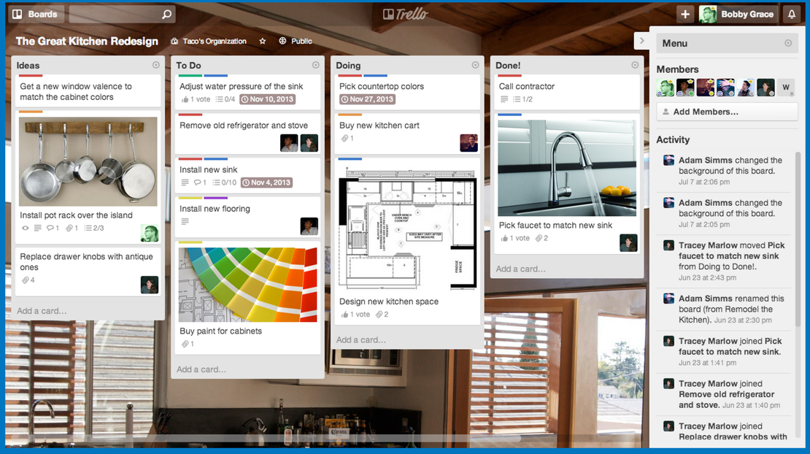
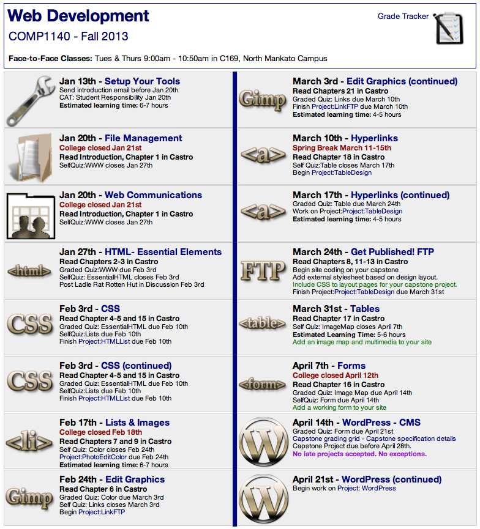
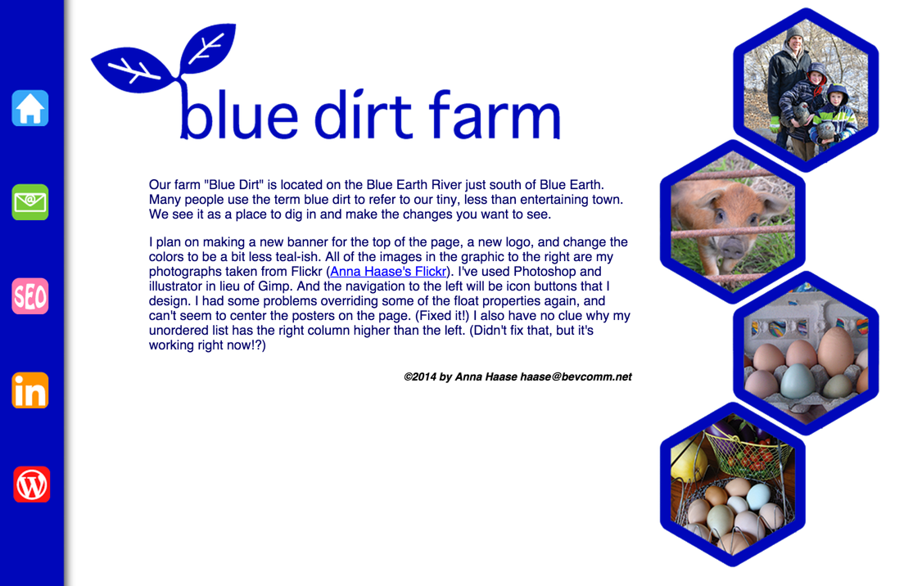
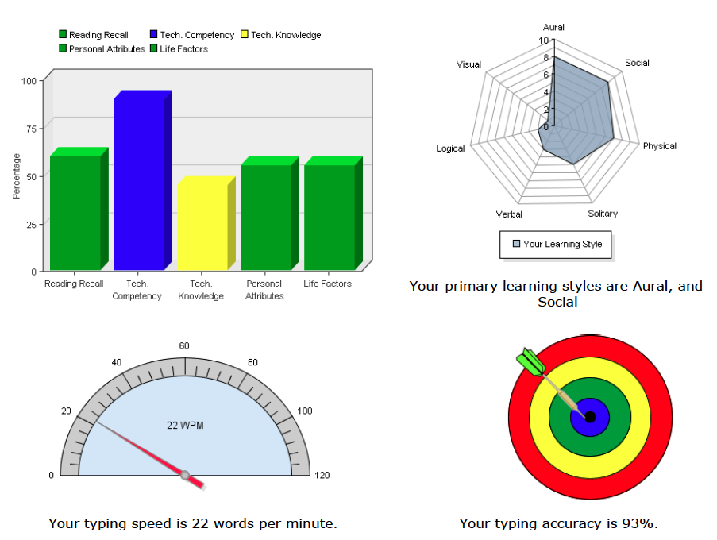

Setup Your Tools |
|
Install your web development tools. |

Learn how to:
- Use a screen-capture video recorder - Screen-Cast-o-Matic
- A text editor - NotePad++ or TextWrangler
- A browser with standards - Google Chrome
- Take screenshots of your computer
- Write effective emails
WII-FM (What's In It - For Me)
Web development is about having the right tools to work with. This module will help you get your tools installed and set up so you can concentrate on creating cool web pages.
Outside of class you will also find these tools useful when you need to:
- Show the help desk a video showing what is actually happening on your computer.
- Create a how-to video showing a friend how to do something on their computer.
- Get a quick response when you send out an email request.
Complete these Learning Activities:
Total estimated time for this module: 4-5 hours.
Why this course is important: The future is now.
Ready when you are...
Check out this slideshow from BrandYourself.com: Brand Yourself!. The site is free or you can get professional support. Can you find out how much that is?
By the end of this course you will be able to build your own website and establish your own SEO on Google without relying on someone else promoting you. You will be in control of your own image out on the Web.
Estimated Time: 2 minutes.
Know the expectations of this course
You are responsible for your own actions. Not the instructor, or administration, or your other classmates or your friends. It all comes down to what you decide to do or not do and what results you want.
6 Expectations of all students taking this course:
1. You must have access. It is expected that you have a working computer at home and are connected to the Internet. Do not try to take this course without these two important tools. All of the material is located online on D2L and not having access to the Web is like driving a car without wheels.
2. Do the work. It is expected that you have done all of the Learning Activities for the week including the self-quizzes. Work ahead and use your classroom time for review and questions on what you have learned.
3. Meet deadlines.
For Projects: Build on the bonus points by turning in projects early. There is also a 48-hour window (with a 20% penalty) after the due date. After that no projects are accepted.
For Quizzes: You have one week to take each graded quiz. Miss that huge window of opportunity and you have lost out on those points. There will be no makeup opportunities at the end of the semester.
4. Understand that learning is moving out of your comfort zone. Learning is about change and change means being willing to move out of your comfort level into new areas you haven't explored before.
5. Communicate as a professional. Always write using proper grammar and spelling. In the professional world you are judged by your emails.
6. Stay connected.
Have all your my.southcentral.edu emails forwarded to your personal email address and check your email at least once each day.
Know the expectations for this course.

No "party" pictures. Use a photo that you would use on a resume. (Click on the image for a larger view)
You will be using this as part of your project work when you do screenshots.
Smart Thinking: Use a shot that shows your face and your smile. Make a great "first" impression every day.
Take a great self-portrait and use it as your "signature" on all your online sites. Make this your web identity.
Here are 100 seriously cool self-portraits and tips to shoot your own..
Here are some other example portraits.
(If the link is broken here is a screen shot.).
Look at the portrait's used by the members of the Young Entrepreneur's Council (YEC). This is a "by-invitation-only " group. Like each of these people you want to put your best face out there.
Estimated Time: 15 minutes
Add a resume-type portrait of yourself to D2L.
A picture is worth a thousand words. Know how to take a screen shot on your computer.
- Macintosh: Command-Shift-4, then select an area: Take a screenshot of an area and save it as a file on the desktop
- iPad - Press the Power (or sleep/wake) button at the top edge of the iPad app and the round Home button at the same time for just a quick second. When you do you’ll see the screen flash white for a moment and you’ll hear the camera shutter sound.
Once you’ve done that, you can go to the Photos app and see your screenshot in the Camera Roll album. 
Android Tablets - Press the Volume Down and Power buttons at the same time. You should hear a camera shutter noise-type sound effect and in your notification bar, you should see “Saving screenshot…” The image will be in the “Gallery” on your device.- Windows 7 - Use the Windows Snipping Tool - Start > All Programs > Accessories > Snipping Tool.
- Windows 8 - Use the Snipping Tool - From the Windows 8 Start Screen, just start typing the word "snip" and press enter.
- Other? - Do a Google search for: [name of your operating system] screenshot
Estimated Time: 15 minutes
Know how to take a screen shot on your computer.
Set up a file on your computer or a page in a notebook to keep track of your userID/passwords. At the very least you'll want to include:
- The URL (web address) of the site - it will start with: http://
- Your username
- Your password
Here is a form you can use: Site Organizer (Right-mouse click, Choose the option: "save link as")
LastPass is an excellent cloud service that will help you keep track of your passwords. It is $1/month if you want to use the program on all your devices.
Estimated Time: 30 min.
Set up a file on your computer or a page in a notebook to keep track of your userID/passwords.
Install Google Chrome as your default browser. https://www.google.com/chrome
Watch this video tongue-in-cheek video showing how fast Google Chrome is.
In reality, the reason you want to use Google Chrome is because of all the excellent developer tools that are built-into the browser.
FireFox is another excellent browser.
Estimated Time: 20 minutes.
Install Google Chrome as your default browser.

Windows Users: NotePad++ from Portable Apps is a very good editor.
Set up defaults so all TABs convert to 3 spaces.(Click on screen shot for larger view)
Macintosh Users: Coda is a very good code editor (If you have the extra money - $99) or TextWrangler (Free!).
Here are several alternatives that are available on the Mac.
Set up the defaults so all TABS convert to 3 spaces.
Estimated Time: 30 minutes.
Install a text editor on your flash drive.
Learn how to write effective emails. Ever send an email and have it be ignored? Follow these 5 simple tricks on writing emails that will get you a quick response.
All your email correspondence in this class are expected to be written in a professional manner outlined by this activity.
In this class it is okay to address the instructor by his or her first name. "Peter" is very appropriate. "Hey Pete!" is not.
Estimated Time: 30 minutes.
Read the article "Learning - Your First Job"
You will be writing an Execute Summary for points in the Assessment section below.
What's an executive summary? In business an Executive Summary is made up of a few sentences that summarize the article or paper. Executives are busy people and will only read a summary to determine.
Jot down some notes as you read, catching the high points of the article so you can summarize it when you start on the Assessment Activities below.
Estimated Time: 30-60 minutes.
Read the article "Learning - Your First Job"
Install Remember the Milk or any other Getting Things Done (GTD) program to help you stay on top of quiz and project due dates. This is a free app that runs on all platforms as well as your mobile phone.
Here is a tutorial/review of Remember the Milk.
Here is a direct link to the video showing how easy it is to use.
Here is a comparison of 167 other time management programs you can try. Click on the price link at the top of the page to list the free ones first.

It is much more visual and you can share your Trello boards with others. Click on the image on the right for a larger view.
The important thing is that you set up some type of system to help you keep track of all your due dates for your classes.
Estimated Time: 30-60 minutes.
Install Remember the Milk or any other Getting Things Done (GTD) program.
Keep in Touch! Stay Connected.
Forward Your Email. You can set your SCC email to forward to the email program you use the most often.
Log into your SCC email and read the help files to learn how to forward your email. It only takes a few clicks.
Estimated Time: 15 minutes
Forward your SCC email to your favorite email account.
Print the syllabus for your records. (There's a "Syllabus" link at the top of the course page) Keep copies of the syllabi from all your classes. They can save you a lot of time and money if you ever transfer to another college.
Estimated Time: 5 minutes
Print the syllabus for your records.

You may feel anxious and worried about missing something in the course. Use the Learning Activity pages as a weekly checklist to make sure you've done everything.
Reward yourself with a 5-15 minute activity that you enjoy after you have finished an activity. (Use a timer so you don't waste precious learning time!)
Estimated Time: 5 minutes
Print out the Course Map and these Learning Activities.
OPTIONAL: Print out these cheat sheets as a reference that you will use anytime you are writing HTML and CSS.
- HTML5 Element Summary - A 1-page summary list of the most popular elements.
- HTML5 Element - Complete List - A 4-page summary of all the HTML5 elements from Smashing Magazine.
- CSS3 Summary Sheet - A 5-page chart from Smashing Magazine.
OPTIONAL: Print out these cheat sheets as a reference that you will use anytime you are writing HTML and CSS.

Your Graded Assignments For This Module
 Stop!
Stop!
Don't frustrate yourself. Do the Learning Activities BEFORE starting these graded activities.
No sense jumping into the deep end of the pool if you haven't learned how to swim...
Send a professional email to the instructor with the following information:
(1) The subject line of your email must be: Web4Biz - your name Contact Information
(2) Attach a screen shot of your D2L Profile Page showing the portrait you've address. This must be either a .png, .gif, or .jpg. (No Word documents.)
(3) Your preferred email address other than the @my.southcentral.edu address. Include your gmail address if it is different than your preferred email. This information will help me get to know you and be able to get in touch with you via phone or email after the course. (Often I hear about web jobs and like to pass the information on to the people that have completed my courses.)
(4) A phone number where your instructor can reach you or leave a message.
(5) Any special concerns you may have about this course.
(6) If you already have a webpage (FaceBook, LinkedIn, or your own website) please send me the link. (Copy and paste the web address URL from your browser, don't trust your typing.)
(7) Include a screenshot as an email attachment showing the screen in your South Central email where you are forwarding your college emails to your the email address you use most often. Name this file: emailForward.png (This will show your instructor that you are staying in touch as well as that you know how to take a screen shot and use email attachments.
Please write using complete sentences. Use proper grammar, punctuation, and capitalization. People judge emails by spelling and grammar. Employers have asked me to stress to my students how vital this is in today's business world.
You will receive up to 10 points for completing this activity.
Note: Even if you have me for several of your classes I would like an email from each course. I keep them in separate course email folders to help me with grading. Feel free to copy and paste.
Complete the CAT:Responsibility (Use the D2L menu item: Quizzes)
This is based on the article you read, "Learning - Your First Job", as part of the Learning Activities.
Here is the question: Being able to write a short, concise executive summary is an important skill in business. As part of the learning activities you read the article "Learning, Your First Job" Write an executive summary highlighting the main points of this article as bullet items as well as a compelling reason why I should go and read the full article.
What is a CAT? A CAT is a Classroom Assessment Technique and they are design to show your instructor how much you have learned from a particular learning activity. For this course you will always find them in the Quiz section of D2L.
How come I don't get my score as soon as I submit the CAT? Each CAT has to be graded manually by your instructor. D2L just isn't smart enough to grade your writing. (Maybe when the next version is released....)
I'm a slow typist. What happens if I run out of time writing my answer??? Feel free to type your answer out in a text editor before you open up the CAT on D2L. Then copy and paste it into the answer field of the CAT question. This will help you check for spelling and grammar errors as well as edit your writing.
(Use PaperRater.com to check your spelling and grammar.)
What's an executive summary? It is a short summary intended to give the reader a quick summary and make the person want to click the link, taking them deeper into the web site, to read the full article. Explore, Create, Repeat is a website that uses executive summaries to get users to jump to the whole article. Notice how succinctly they are written.
Include the highlights of the article using a few sentences as well as a compelling reason why the person should go read the complete article. Executives are busy people and often want to read a summary before spending time reading through a long, detailed piece.
Please note: This is not a personal, reflective paper on what you thought about the article. It is a short summary intended to give the reader a quick summary and make the person want to click the link, taking them deeper into the web site, to read the article.
How will my CAT be scored?
You will earn points based on the following scale:
4-5 points - Succinct and to the point yet summarizing the article yet still catching my attention making me want to read the full article.
3 points - Okay. Nothing spectacular or some misspelled words.
1-2 points - Yawn. Someone else must have read the article for you or you tried to imitate a comedian by using horrible spelling and grammar. (Did you use PaperRater.com?)
0 points - You seem to have read a different article or didn't do this assessment activity.

Your Tip-Of-The-Week
(Click on the lightbulb to reveal the tip.)
SmarterMeasure takes a picture of your "student" self
Use this to get a "before" and "after" picture of yourself at the beginning of your degree and then again at the end of your degree.

The username: southcentral
The password: student
An assessment gives you a snapshot of who you are right now. There are no right/wrong answers.
Think of it as a picture of your skills as they are today including a view of:
- Your personal Attributes
- A profile of your Learning Styles
- Your reading speed and comprehension
- Your computer skills and knowledge
- Your typing speed and accuracy
You don't have to do the assessment all in one setting. SmarterMeasure will send you an email with your own login and pin number allowing you to return later to finish the survey.
Estimated Time: 30 minutes to 1 hour. (This does not have to be completed in one sitting.)
What's Next?
Learn how to manage all the files and folders on your computer.
Learn the hotkeys that professionals use to make their work go faster.
Move on to Module: File Management.